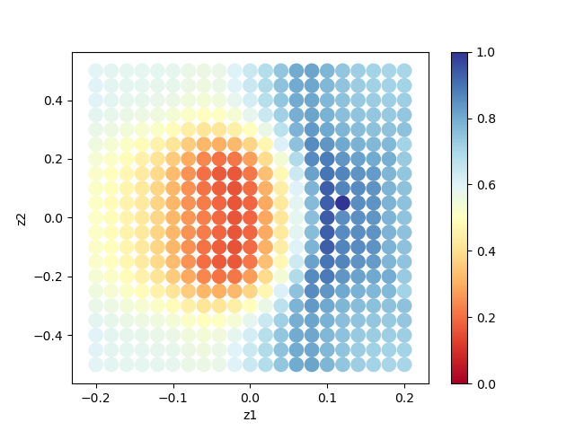

グリッド型探索¶
ここでは、グリッド型探索を行い、回折データから原子座標を解析する方法について説明します。
グリッド型探索はMPIに対応しています。
探索グリッドを与えるデータ MeshData.txt を事前に準備する必要があります。
サンプルファイルの場所¶
サンプルファイルは sample/mapper にあります。
フォルダには以下のファイルが格納されています。
baseディレクトリメインプログラムでの計算を進めるための参照ファイルを格納するディレクトリ。参照ファイルは
exp.d,rfac.d,short.t,tleed.o,tleed4.i,tleed5.iです。input.tomlメインプログラムの入力ファイル
MeshData.txt探索グリッドのデータ
ref_ColorMap.txt計算が正しく実行されたか確認するためのファイル(本チュートリアルを行うことで得られる
ColorMap.txtの回答)。prepare.sh,do.sh本チュートリアルを一括計算するために準備されたスクリプト
以下、これらのファイルについて説明したあと、実際の計算結果を紹介します。
参照ファイルの説明¶
tleed4.i, tleed5.i, rfac.d は satleed のパラメータファイルです。
最適化する原子座標は tleed4.i の中で opt000, opt001 のようにキーワードとして埋め込みます。
exp.d は参照する実験データです。 short.t, tleed.o は、あらかじめ satl1.exe を使って求めた入力データです。
実際に探索するグリッドは MeshData.txt で与えます。
サンプルでは MeshData.txt の中身は以下のようになっています。
0 -0.1 0
1 -0.05 0
2 0 0
3 0.05 0
4 0.1 0
5 -0.1 0.05
6 -0.05 0.05
7 0 0.05
8 0.05 0.05
9 0.1 0.05
1列目が通し番号、2列目以降は base/tleed4.i に入る opt000 , opt001 の値が順に指定されています。
入力ファイルの説明¶
ここでは、メインプログラム用の入力ファイル input.toml について説明します。
input.toml の詳細については入力ファイルに記載されています。
以下は、サンプルファイルにある input.toml の中身になります。
[base]
dimension = 2
output_dir = "output"
[solver]
name = "leed"
[solver.config]
path_to_solver = "./leedsatl/satl2.exe"
[solver.reference]
path_to_base_dir = "./base"
[algorithm]
name = "mapper"
label_list = ["z1", "z2"]
[algorithm.param]
mesh_path = "./MeshData.txt"
最初に [base] セクションについて説明します。
dimensionは最適化したい変数の個数で、今の場合はbase/tleed4.iで説明したように2つの変数の最適化を行うので、2を指定します。output_dirは出力先のディレクトリ名です。省略した場合はプログラムを実行したディレクトリになります。
[solver] セクションではメインプログラムの内部で使用するソルバーとその設定を指定します。
nameは使用したいソルバーの名前です。leedに固定されています。
ソルバーの設定は、サブセクションの [solver.config], [solver.reference] で行います。
[solver.config] セクションではメインプログラム内部で呼び出す satl2.exe についてのオプションを指定します。
path_to_solverはsatl2.exeのコマンド名です。パスを指定するか、コマンド名をPATH環境変数から探索します。
[solver.reference] セクションでは参照データについての指定を行います。
path_to_base_dirは参照データが置いてあるディレクトリ名を指定します。
[algorithm] セクションでは、使用するアルゴリスムとその設定をします。
nameは使用したいアルゴリズムの名前です。このチュートリアルではグリッド探索による解析を行うので、mapperを指定します。label_listは、opt000,opt001を出力する際につけるラベル名のリストです。
[algorithm.param] セクションでは探索アルゴリズムに関するパラメータを指定します。
mesh_pathは探索グリッドを記述したファイルを指定します。
その他、入力ファイルで指定可能なパラメータの詳細については入力ファイルの章をご覧ください。
計算実行¶
最初にサンプルファイルが置いてあるフォルダへ移動します(以下、本ソフトウェアをダウンロードしたディレクトリ直下にいることを仮定します).
$ cd sample/mapper
setup.sh を使って satleed のダウンロードとコンパイルを行います。
$ sh setup.sh
leedsatl ディレクトリに satl1.exe と satl2.exe が作成されます。
そのあとに、メインプログラムを実行します(計算時間は通常のPCで数秒程度で終わります)。
$ mpiexec -np 4 odatse-LEED input.toml | tee log.txt
ここではプロセス数4のMPI並列を用いた計算を行っています。
実行すると、 output ディレクトリとその下に各ランクのフォルダが作成され、計算結果が出力されます。また、以下の様なログが標準出力に表示されます。
Iteration : 1/33
Read experiment.txt
mesh before: [1.0, 6.0, 6.0]
z1 = 6.00000
z2 = 6.00000
[' 6.00000', ' 6.00000']
PASS : degree in lastline = 7.0
PASS : len(calculated_list) 70 == len(convolution_I_calculated_list)70
R-factor = 0.04785241875354398
...
z1, z2 に各メッシュでの候補パラメータと、その時の R-factor が出力されます。
最終的にグリッド上の全ての点で計算された R-factor は、 ColorMap.txt に出力されます。
今回の場合は
-0.100000 0.000000 0.319700
-0.050000 0.000000 0.212100
0.000000 0.000000 0.189500
0.050000 0.000000 0.502300
0.100000 0.000000 0.941600
-0.100000 0.050000 0.318600
-0.050000 0.050000 0.206600
0.000000 0.050000 0.190500
0.050000 0.050000 0.506200
0.100000 0.050000 0.933200
のように得られます。1列目、2列目に opt000, opt001 の値が、3列目に R-factor が記載されます。
なお、メインプログラムを実行するスクリプトとして do.sh を用意しています。
do.sh では ColorMap.dat と ref_ColorMap.dat の差分も比較しています。
以下、説明は割愛しますが、その中身を掲載します。
#!/bin/sh
sh prepare.sh
time mpiexec -np 4 odatse-LEED input.toml
echo diff output/ColorMap.txt ref_ColorMap.txt
res=0
diff output/ColorMap.txt ref_ColorMap.txt || res=$?
if [ $res -eq 0 ]; then
echo TEST PASS
true
else
echo TEST FAILED: ColorMap.txt and ref_ColorMap.txt differ
false
fi
計算結果の可視化¶
ColorMap.txt を図示することで、 R-factor の小さいパラメータがどこにあるかを推定することができます。
今回の場合は、以下のコマンドを実行すると2次元パラメータ空間の図 ColorMapFig.png が作成されます。
$ python3 plot_colormap_2d.py
作成された図を見ると、(-0.02, ±0.1) 付近に最小値を持っていることがわかります。
 2次元パラメータ空間上での
R-factor。¶